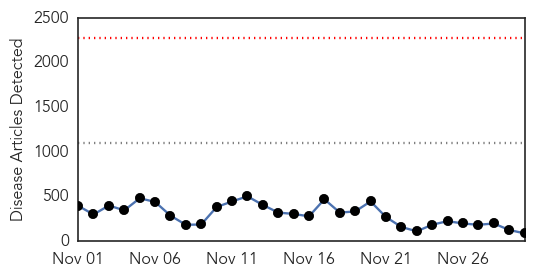
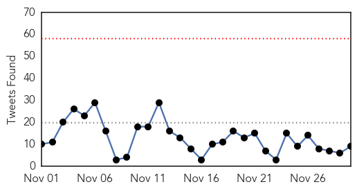
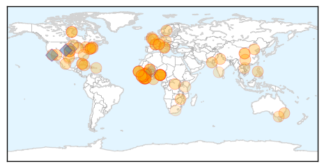

30 Day Trends
Web: 0 alerts, 0 warnings
Twitter: 0 alerts, 0 warnings
Top Articles:
- 1.000
- WHO will miss Ebola targets it set for Dec 1
- 1.000
- Test May Detect Ebola in Fifteen Minutes
- 1.000
- WHO fails in battle against deadly ebola
- 1.000
- Ebola Death Toll Climbing Toward 7,000 in West Africa
- 1.000
- WHO will miss Ebola targets it set for Dec 1
- 1.000
- WHO will miss Ebola targets it set for Dec 1
- 1.000
- Ebola death toll 7,000 as World Health Organisation misses targets to contain disease
- 1.000
- Number of people with Ebola in West Africa
- 1.000
- Controlling an Outbreak -- Beijing Review
- 1.000
- WHO will miss Ebola targets it set for Dec 1
- 1.000
- Barney: Will Ebola spread to Arizona? It’s time for some straight talk
- 1.000
- WHO will miss Ebola targets it set for Dec 1
- 1.000
- Mali free of Ebola, president says, as virus continues spread in West Africa
- 1.000
- Ebola Epidemic Began with One Toddler
- 1.000
- U.N. agency: Number of Ebola cases now tops 16,000
- 0.999
- WHO will miss Ebola targets it set for Dec 1
- 0.999
- WHO will miss Ebola targets, had set Dec 1 to isolate 70 per cent of patients
- 0.999
- No more Ebola cases in Mali, says president
- 0.999
- Ebola: Advisory to male survivors to abstain from sex
- 0.999
- WHO Advises Male Ebola Survivors To Abstain From Sex For 3 Months
- 0.999
- WHO set to miss Ebola targets it had placed for Dec. 1
- 0.999
- At one month, U.S. Ebola monitors find no cases
- 0.999
- Ebola death toll nearing 7000 mark: WHO
- 0.999
- More than 16,000 people sickened with Ebola
- 0.999
- mystery as well as challenge
- 0.999
- New 15-Minute Ebola Virus Test Trials in Guinea
- 0.996
- How WHO, CDC use Redlands tech firm Esri to track Ebola
- 0.996
- Sierra Leone Will Become The Focus Of Ebola Volunteers
- 0.996
- ‘Ebola is beyond poverty, health cannot be marketed’ — RT News
- 0.995
- Scientists at Protein Sciences Corp. in Meriden lab scramble to create an Ebola vaccine
- 0.992
- Sweden steps up Ebola financial aid
- 0.992
- First Australian health workers depart for Ebola hot zone
- 0.991
- Chicago nurse in West Africa working to fight Ebola
- 0.990
- U.S. Ebola vaccine looks protective but may require high dose
- 0.989
- Ebola mission advises Pakistan to improve capacity to filter at-risk passengers
- 0.989
- France's Hollande warns against isolating Ebola-hit Guinea
- 0.989
- French President Hollande cheered in Ebola-stricken Guinea; 1st Western leader in Ebola nation
- 0.988
- ‘Ebola-cured travellers must undergo body fluid tests’
- 0.988
- Worldnews.com
- 0.988
- WHO will miss Ebola targets it set for Dec 1
- 0.987
- The World is on the side of those who fight against Ebola
- 0.987
- China stands with world against Ebola
- 0.984
- GSK announces success on Ebola trial vaccine
- 0.982
- No Ebola Symptoms for Connecticut Patient Who Traveled to Liberia
- 0.982
- French president cheered in Ebola-stricken Guinea
- 0.980
- Man Who Died In Salisbury Fire Is Identified
- 0.979
- Ebola preoccupies once skeptical Guinean leader
- 0.978
- In Liberia, Ebola Shifts From Cities To Villages
- 0.977
- US hospitals wary of caring for Ebola patients
- 0.975
- Mali confirms 2 new cases of Ebola virus disease
Showing top 50 articles...
Top Tweets:
- 0.893
- RT: The World Health Organization reports that about 7000 people have died from ebola and the response is still behind: http:/…
- 0.754
- RT: Death toll from Ebola outbreak nears 7000 in West Africa: WHO http://t.co/n22zqAFx5B
- 0.678
- RT: Ebola death toll nears 7000 as Sierra Leone struggles to contain disease http://t.co/aYHyMpSfgX
- 0.659
- Number of Ebola infections in west Africa passes 16000 http://t.co/IA6hyEkQA6
- 0.659
- Number of Ebola infections in west Africa passes 16000 http://t.co/544v3M3vPT
- 0.618
- RT: Need to focus on broader health care issues in Africa post Ebola GlobalNursing
- 0.566
- RT: [GUARDIAN] Number of Ebola infections in west Africa passes 16000 http://t.co/ELEeDxfBbN EBOLANEWS
- 0.529
- RT: MT [ABC] Ebola outbreak: Death toll nears 7000 says WHO after Liberia figures revised http://t.co/OwsVQR1DV9 EBOLANEWS
- 0.517
- Reported Ebola case numbers in Sierra Leone appear to be slowing albeit still high. Any sense of whether this is real or 1/2
Web/News Articles
Tweets
Article Locations
Article Confidences